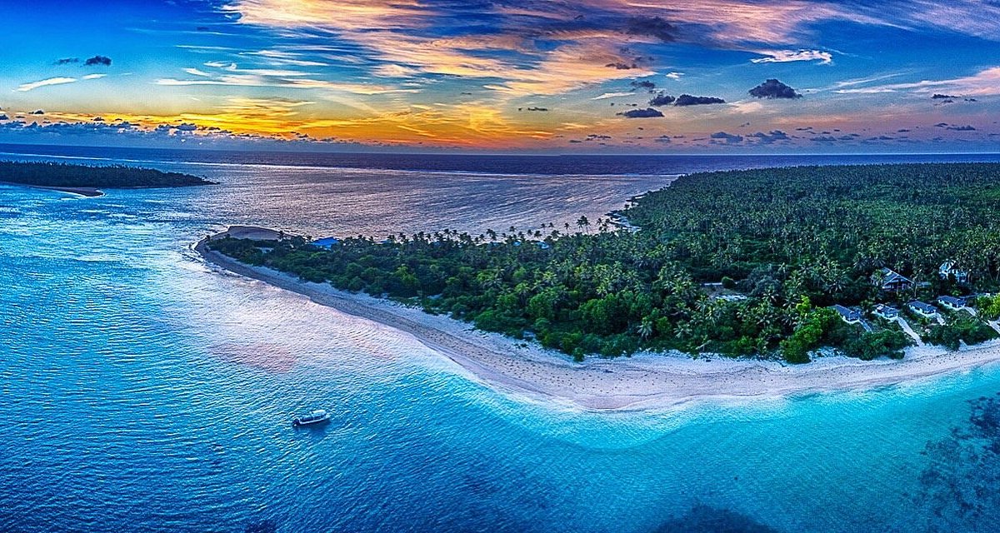
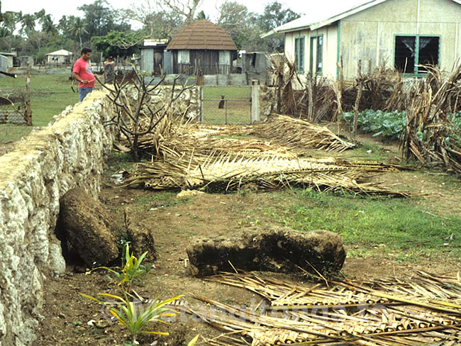

Haʻapai is an archipelago of low-lying islands known for its tranquility and untouched beauty. With fewer tourists, it offers a peaceful retreat where visitors can enjoy pristine beaches and experience Tongan village life.

Figure 1: Serene beach on Ha'apai.

Figure 2: Traditional village in Ha'apai.